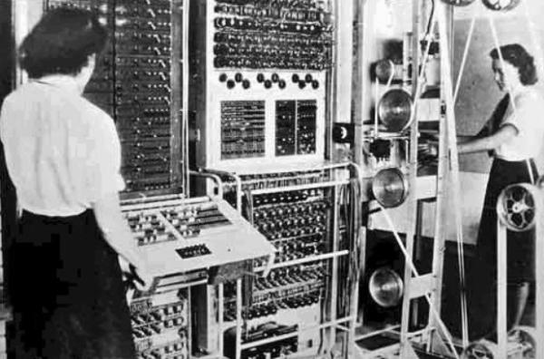
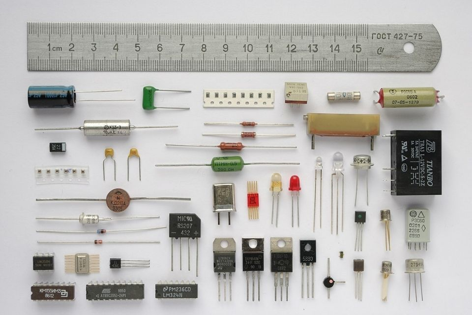
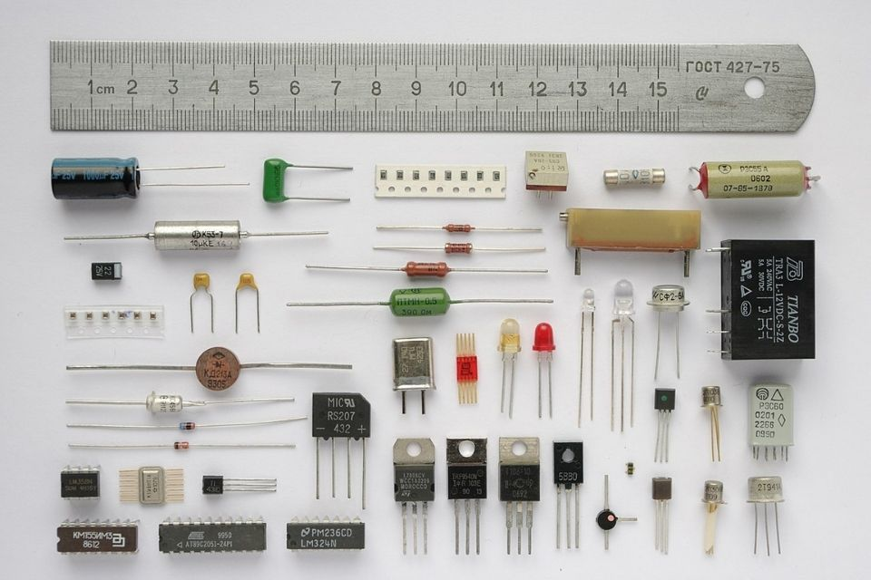

Segunda Guerra
Mundial
A Segunda Guerra Mundial foi um conflito de proporções globais que aconteceu entre 1939 e 1945. Caracterizada como um conflito em estado de guerra total, a Segunda Guerra Mundial fez Aliados e Eixo enfrentarem-se na Europa, África, Ásia e Oceania. Por mais que a guerra seja algo ruim, ela trouxe evoluções tanto bélicas como tecnológicas para o mundo.Algumas das tecnologias usadas durante a Segunda Guerra foram desenvolvidas durante as décadas de 1920 e 1930. Muitas guerras tiveram efeitos importantes nas tecnologias atuais, no entanto, em comparação às guerras anteriores, a Segunda Guerra Mundial teve um maior impacto na tecnologia e nos dispositivos usados até hoje.
Tecnologias
Os britânicos foram os primeiros a desenvolverem computadores eletrônicos que eram usados principalmente para quebrar os códigos "Enigma", que eram códigos secretos nazistas. Esses códigos, para os aliados, eram indecifráveis para mensagens de rádio. O criador de um desses computadores eletrônicos foi Alan Turing, um gênio que foi crucial para os Aliados ganharem a guerra. Alan Turing é considerado o pai dos computadores nos dias atuais. Além dos computadores, outras tecnologias foram criadas para a guerra, porém hoje em dia fazem parte do nosso cotidiano são GPS, Câmeras Digitais, Internet e os Transistores Elétricos. Os transistores já existiam naquela, porém eram mecânicos, assim, sendo muito menos eficientes do que um elétrico.
 

Costa do Ouro Britânica
Foram nos ensinados nas escolas sobre quais eram os países da segunda guerra mundial, porém os países africanos não foram tão destacados. Uma colônia que vale destacar na Segunda Guerra é a Costa do Ouro Britânica (atual Gana) que desempenharam um papel importante na Campanha da África Oriental, particularmente no ataque à Etiópia controlada pelos italianos. Acra, a capital, hospedou aeronaves aliadas enquanto voavam entre os Estados Unidos, Europa e o Pacífico. A Costa do Ouro Britânica também se beneficiou financeiramente da guerra. Em 1945, o aumento dos gastos do governo britânico e a introdução de um imposto de renda levaram a uma expansão da receita local. A guerra mudou a demografia da colônia, concentrando trabalhadores em algumas grandes cidades. O governo colonial lançou um programa para lidar com a escassez de moradias construindo com material de construção local barato, porém robusto (um terremoto em 1939 havia danificado infraestruturas em muitas cidades). A economia da Costa do Ouro Britânica (atual Gana) é principalmente a agricultura, mas além da agricultura a Costa do Ouro tinha recursos minerais como por exemplo, ouro, diamantes, manganês e bauxita. Também possui petróleo, embora em pequena quantidade.